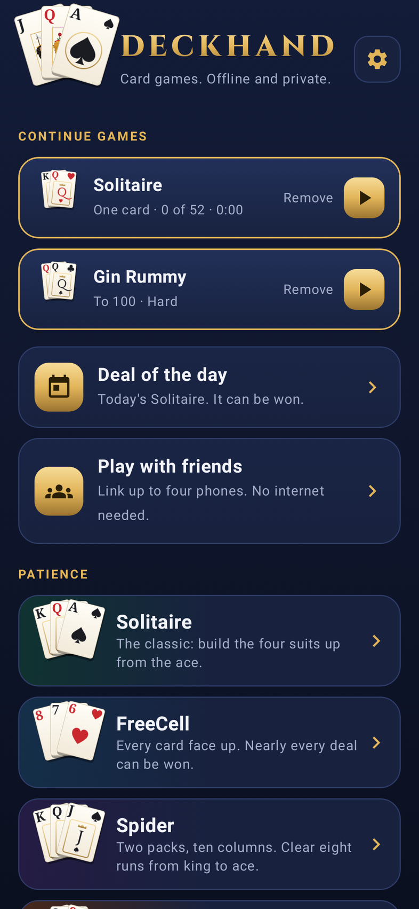
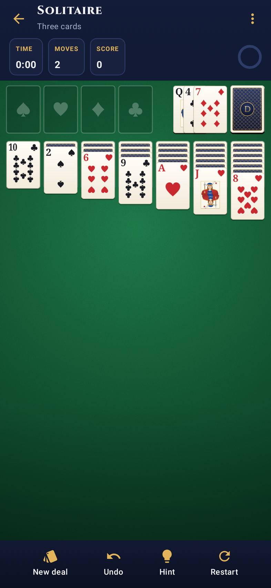
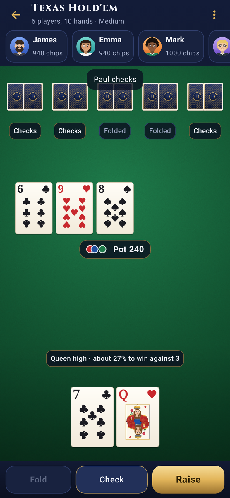
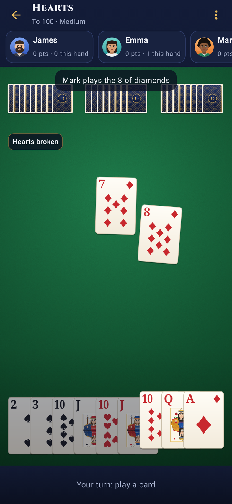
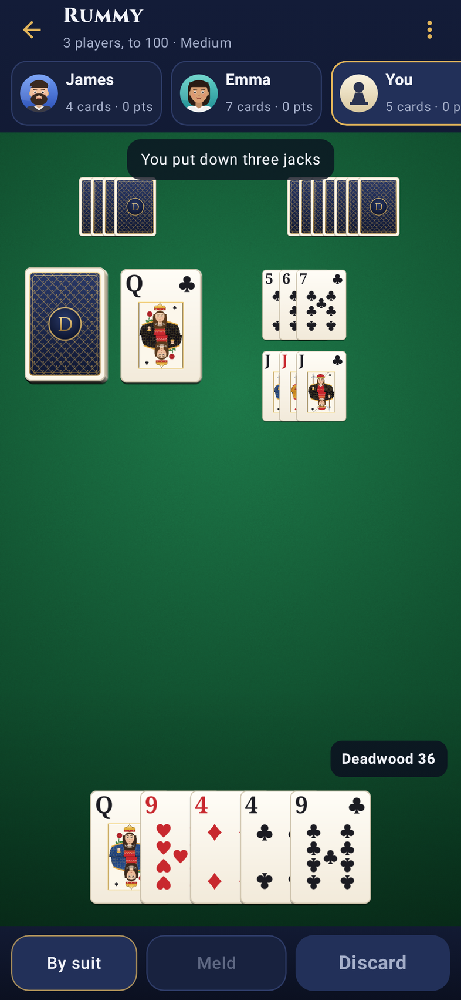
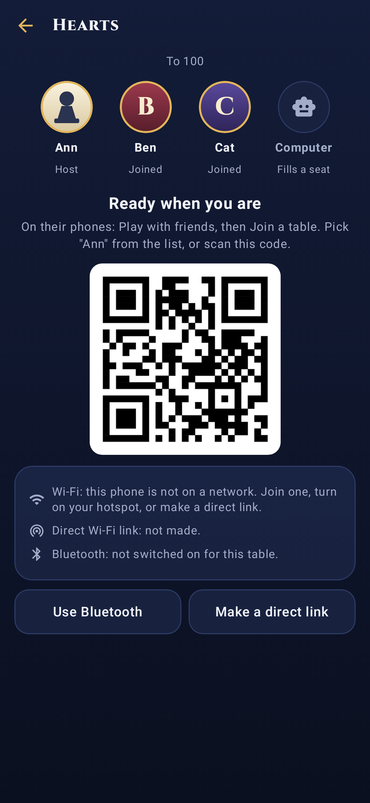
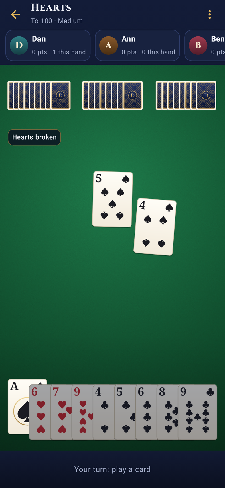
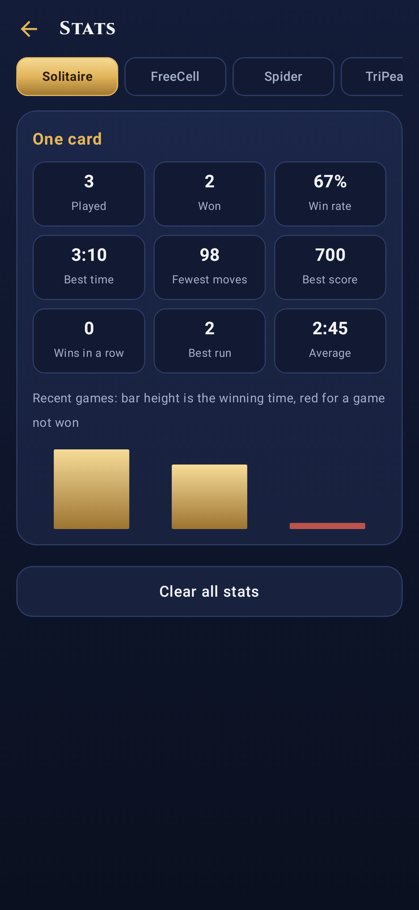

Every card game, on the table.
Deckhand is fourteen card games for Android that never go online. Four patience games, and ten games at the card table against computer players with names, faces and their own styles of play, from Beginner to Expert.
Play with friends on up to four phones over Wi-Fi or Bluetooth, with no internet. Every phone locks the pack with its own secret key, so nobody can see another player's cards.
Download for AndroidHow to install
- Version 1.0.1
- Android 8 or later
- 3.4 MB
Free, with nothing to unlock. No adverts, no account with the developer, no tracking. Compare or read the release notes.
Chrome may say the file might be harmful. It shows this for app files that do not come from Google Play. Choose Download anyway.

- No advertsNone in the app and none on this site.
- Nothing to buyEvery game and every option is free.
- Works offlineIt never contacts the internet.
- No accountNothing to sign up for.
A look inside
These are the real screens, drawn from the app's own code with made-up games. Swipe or scroll sideways to see them all.







How it works
Everything the games need is inside the app: the rules, the shuffles, the computer players, and the link between phones.
Choose a game
Pick one of the patience games, or sit at the card table. Choose the rules, how long to play and how strong the computer players are.
Play your hand
Drag cards or tap them. Every move is checked against the rules, and the computer players take their turns at the speed you set.
Bring your friends
Host a table and up to three friends join on their own phones, with no internet. The computer fills any empty seats.
Everything is in, and all of it is free
Nothing below is held back for a paid tier, because there is no paid tier.
Patience
- Four classics
- Solitaire with one or three cards turned, FreeCell, Spider with one, two or four suits, and TriPeaks.
- Deals that can be won
- Every Solitaire and TriPeaks deal can be checked in advance, so you only get deals that can be won. Any deal is there too, if you prefer.
- Help when you want it
- Unlimited undo, a hint that shows a good move, and cards that finish themselves when the game is won.
At the card table
- Ten games
- Texas Hold'em and Three Card Brag for two to six, Hearts and Whist for four, Rummy and Crazy Eights for two to four, Gin Rummy, Pontoon, Blackjack and Snap.
- Computer players with names
- Twenty-five players with faces and their own styles, cautious, steady, bold or tricky, at five levels from Beginner to Expert. The levels were tested in thousands of games between the computer players themselves.
- Real rules
- Side pots in Hold'em, blind play in Brag, passing and shooting the moon in Hearts, trumps in Whist, knocking and undercuts in Gin.
Play with friends
- Up to four phones, no internet
- Link by the same Wi-Fi, a hotspot, a direct Wi-Fi link or Bluetooth. Eight of the games can be played this way.
- Nobody sees your cards
- Every phone shuffles and locks the pack with its own secret key. A card is unlocked only for the player who holds it, or for everyone once it is played.
- A dropped link is not the end
- If a phone loses touch the game waits, and carries on from the same place when the link comes back.
Looks and feel
- Cards drawn for the app
- Classic picture cards or a clean modern face, a four-colour pack, four card backs and five table colours.
- Smooth animation
- Cards lift, flip and slide into place, with a celebration when you win. Card speed can be changed and effects reduced or switched off.
- Your way
- Tap to move, a left-handed layout, colour-safe signs, larger text, sound and vibration that can be switched off.
Your games stay with you
No servers
There are no accounts and no servers. Linked phones talk only to each other.
No ads, no tracking
There is no advertising, analytics or tracking, in the app or on this site.
Never online
Deckhand contains nothing that contacts an internet address. The website links in Settings open in your browser.
Installing and updating
Deckhand is not on Google Play, so your phone asks a couple of extra questions the first time.
Download the app file
Tap Download on your phone. The file is called Deckhand.apk and is about 3.4 MB. If Chrome says the file might be harmful, choose Download anyway.
Allow the install
Open the file. The first time, Android asks you to allow your browser to install apps. Allow it, go back and tap Install. If Google Play Protect steps in, choose More details, then Install anyway.
Updating later
Deckhand never goes online, so it cannot tell you about new versions by itself. In Settings, About, the button "Newer version?" opens the release notes page in your browser. Install the new file over the old one and your games, stats and settings are kept.
Version 1.0.1, released 23 November 2026. See the release notes, or check your download.
Questions
Is Deckhand really free?
Yes. There is no paid version, no subscription and no adverts, and nothing in the app is locked. Every game, every rule choice and every card design is there from the start.
Is it on Google Play?
No. Deckhand is a personal project and is downloaded from this site as an Android app file. It needs Android 8 or later, which covers almost every phone made since 2017.
Does it need the internet?
No, never. Deckhand does not go online at all. The patience games and the games against the computer work with no connection, and linked phones talk directly to each other.
Which games can I play with friends?
Texas Hold'em, Three Card Brag, Hearts, Whist, Crazy Eights and Rummy on two to four phones, and Gin Rummy and Snap on two. The computer fills any seats left over. Pontoon and Blackjack are played against the bank on your own phone.
Can another phone see my cards?
No. Before every deal each phone shuffles the pack and locks every card with its own secret key, so no phone knows the order. A card can only be read by the player it is dealt to, and by everyone once it is played. If a phone ever played a card the rules did not allow, the other phones would find out when the cards were shown, and the game would stop.
How do the phones link?
Every phone needs Deckhand. One taps Play with friends, then Host a table; the others tap Join a table. On the same Wi-Fi or hotspot the host shows up in a list. With no Wi-Fi, the host can make a direct link and show a code to scan, or the phones can use Bluetooth.
Why does it ask for nearby devices, location or the camera?
Only for Play with friends. Android needs the nearby devices permission to find other phones by Bluetooth or a direct Wi-Fi link; on Android 12 and older that permission is called Location, though Deckhand never reads where you are. The camera is used only to scan the host's code. Each is asked for when first needed, and everything else works if you say no.
How strong are the computer players?
There are five levels. Beginners make plenty of mistakes; Experts weigh up the cards that have gone, read the betting and play the percentages. The levels were tested in thousands of games between the computer players themselves: in every game an Expert beats a Beginner far more often than not.
Can every Solitaire deal be won?
With Deals set to Can be won, yes: every Solitaire and TriPeaks deal you get has been checked and has a way to win it. Set it to Any deal for a fully random shuffle, where some cannot be won.
How do I get Deckhand onto a friend's phone?
In Play with friends, tap Send Deckhand to a friend. Send the app file by Quick Share or Bluetooth, or show a code that your friend scans with their camera to download it straight from your phone over Wi-Fi or a hotspot.
Does it work on an iPhone?
No. Deckhand is for Android phones and tablets only.
Who made it?
Deckhand is made by Jonathan Jackson, an independent developer in the United Kingdom.
Deal me in
Free, with no adverts and nothing to unlock. Made by the developer of several other free Android apps: see them all.